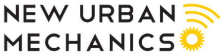

Hi there!
I’m an urbanist and civic designer. I create policy and civic technology programs with cities to make our communities more livable and equitable. My track record includes launching programs at the East-West Center (mayors dialogue), in Ahmedabad India (art on social equity and bicycling), and in the Boston Mayor's Office of New Urban Mechanics. I currently serve as an Innovation Fellow for the Commonwealth of Massachusetts.
I hold a Master in City Planning from MIT. Off hours, you can find me riding my bicycle in Cambridge, or surfing the nearest coastline. I owe my love of cities and loathing of traffic to Honolulu, my home.
My portfolio

'GOOGLE PUBLIC POLICY BLOG'
5 Strategies for Open Data @ the State
Five ways for states to make the most of open data May 1, 2015 [Text from article]
States should leverage their unique role in government rather than mimic a municipal approach to open data.
They must take a different approach to encourage civic engagement, more efficient government, and innovation.
'OPPORTUNITY EXISTS... IN KAILUA'
Op-ed in The Honolulu Star-Advertiser
Opportunity exists to make Kailua livable and affordable December 3, 2013 [Text from article]
Kailua is at a crossroads. Will it become a big box town with lots of traffic and no soul? Or will it preserve its unique character and small town charm?
The change in landownership to Alexander & Baldwin provides a renewed opportunity to address issues impacting Kailua today: an increasingly unbalanced commercial market, traffic congestion, and lack of affordability.
Both residents and visitors love Kailua because of its unique sense of place, and local businesses play a big role. Travelers are increasingly drawn to 'niche' tourism experiences that highlight a destination’s unique characteristics. Too heavy a focus on national chains diminishes the very power that draws people to Kailua. Furthermore, locally owned businesses can have a larger impact on the local economy than national chains headquartered far away.
A&B could support alternative activities that support the local economy such as: developing an incubation space where local entrepreneurs can pay subsidized rental rates to help jump-start their business; holding temporary 'pop-up' or other special events that highlight local businesses; and organizing local business owners to develop a shared marketing strategy..."
New Participatory Planning in East Boston
Mayor's Office of New Urban Mechanics
As a fellow, I co-developed East Boston Makers + Movers which used Maker tools to help people imagine a bicycle hub of the future in East Boston’s Central Square neighborhood. It was an open Maker and participatory planning event, hosted by the Mayor’s Office of New Urban Mechanics, the Boston Transportation Department, and supported by a grant from The Awesome Foundation.
To attract a new audience that may not typically engage in community events, we used hands-on accessible activities, which took place in English and Spanish. Using low-tech tools (markers, paper, and Legos) and high-tech tools (a vinyl cutter and 3D printer), participants mocked up their own vision for the bicycle signage and orientation for the bicycle hub.
So what happened? Over 100 people joined in on the fun. With the Boston Public Health Commission, we gave out 52 bicycle helmets—mostly to children. We gained 41 bicycle wayfinding design suggestions, and printed out 3 samples on the vinyl cutter. 22 people used the legos to demonstrate their ideas for a bicycle hub’s orientation. Since East Boston does not have a single bicycle repair shop in the area, the public bike repair stand accompanying the bicycle hub will fill a need in the community.
Coding and Maker Technology Workshops for Girls
Mayor's Office of New Urban Mechanics
As a fellow, I co-developed Girls MAKE the City which connected 75 local middle school girls with female role models in the science and technology fields and engaged participants through hands-on activities related to Making, or 21st century innovation.
Mayor Menino declared August 23, 2013 "Girl Power Day."
It continues on today in Mayor Walsh's administration, with the most recent event at the MIT Media Lab with the Lifelong Kindergarten Group, the Mayor's Office of Women's Advancement, the New Urban Mechanics, and Nas(!) the music artist.

Urban Asia Mayors Dialogue
East-West Center
At the East-West Center, I co-founded the Asia-Pacific-U.S. Urban Dialogue which brings together small groups of mayors, governors, urban planning practitioners, scholars, activists, and private sector representatives from the United States, Asia, and elsewhere.
Launched in 2008, this on-going seminar series facilitates informal, roundtable dialogue to examine the challenges of urban transition and governance using a knowledge-based approach that integrates experience and data. Through peer-to-peer exchanges on policy options, these diverse groups share and reflect on long-term strategic visions for managing urban growth in the region. At the invitation of each cities, we held follow-up workshops in Nepal and Vietnam.
The East-West Center is a non-profit established by Congress in 1960 to better relations between Asia and the U.S. Hawaii was chosen as both the literal and symbolic meeting place to house this institution.
Non-Motorized Transportation Street Design Handbook for Rajkot City Government, India
ITDP, India Bureau
I consulted with the Institute of Transportation and Development Policy (ITDP)— an international non-profit — in Ahmedabad, India on an initiative to increase pedestrian and bicycle access and safety. There I worked on developing a non-motorized transit (NMT) street design guideline handbook for the City of Rajkot, specifically focusing on creating a safer pedestrian network through dedicated infrastructure initiatives.
A city that provides infrastructure supporting non-motorized transit not only promotes environmentally sustainable transit and more transit options for their citizens, but also promotes an equitable means for underserved communities to access city services and their destinations.
For this project, I created a methodology and strategy for project-wide data collection: developed complimentary GIS mapping; ability to transition between data formats; developed a database for continuation of proposal; and formulated the policy language.
My time in India was sponsored by MIT's Public Service Center, and a fellowship from the Aga Khan Program for Islamic Architecture @ MIT.
Street Stories India
Art on Bicycling & Social Equity @ MIT Council of the Arts
Everyday men and women working as vendors, head-loaders, cart pushers, domestic servants and waste pickers go out and make their living in India– but do you know their story and what their livelihoods depend on? The common thread uniting their experiences is their dependence on walking or cycling.
Using journalistic photographs and ethnographic interviews to record pedestrian and cyclists’ everyday movements and interactions with the city, STREET STORIES serves to remind the public about the critical link between social equity and transportation.
While this series took place in Ahmedabad, India, much of the challenges and issues these people face are common throughout India.
STREET STORIES was funded by the MIT Council for the Arts and supported by the Self-Employed Women’s Association (SEWA) and the Centre for Urban Equity, Centre for Environmental Planning and Technology (CEPT) University, Ahmedabad, India.
A more detailed article about some of the struggles hawkers face is published on MIT's Colab Radio, "Fighting for Space: Vegetable Hawkers in Ahmedabad."
Tactical urbanism, public policy reform, + 'innovation spotting' by government
Master's Thesis @ MIT
My thesis examines the "urban legend" surrounding San Francisco's parklet program, as many assume it is a result of the tactical urbanism (TU) intervention, PARK(ing) Day. I also analyze projects in Dallas, Brooklyn, and Raleigh.
I argue that tactical urbanism is a play on the physical and political landscape, manifested as a design intervention. While interventions play on the two landscapes-- not one--urban tacticians tend to focus primarily on the physical play and miss the opportunities presented by playing off the political and institutional bodies as well. Tacticians that relate their projects to interest groups and government have a better chance to formalize their intervention. Interventions capture these efforts with varying levels of success and sophistication, with each project different in context and texture.
TU poses a host of risks and potential rewards. Like traditional acts of civil disobedience, TU can be very generative, allowing players to pilot projects on a small-scale, minimizing risk and cost. TU can go beyond spotlighting problems to produce solutions. Both are good, I argue, for government and good for would-be innovators in civil society. Yet with rule breaking comes the risk of going beyond civil disobedience and duty into parochial, special-interest agendas and even vigilantism. To minimize that risk, the field needs some rules of the road, as safeguards in the TU playbook. As of now, TU does not have a code. Developing one is a critical next step, both for urban tacticians and planning research.
I presented some of these findings about the risks and rewards of tactical urbanism at the Center for New Urbanism's Tactical Urbanism Salon "This is a Test" at District Hall, Boston.
Grand Junction Riverwalk
Urban Design Studio @ MIT
Rehabilitating A Forgotten Relic: Guided by the principle of pedestrian connectivity, the new Grand Junction Riverwalk along the historic railroad bridge links existing parks on the Boston and Cambridge waterfronts.
I produced the images and renderings with Photoshop, Illustrator, InDesign, and Google SketchUp.
Assignment: Propose an infill development in Cambridge, Massachusetts that develops the site to its maximum potential in accordance with its current zoning and urban design guidelines for the city.
Urbanscapes
Around-the-World Travel Journal
In September 2010, I hit the road with nothing but a small backpack, my surfboard, and my husband, and traveled around the world for 9 months on $25 a day.
Urbanscapes is my online journal documenting my observations about the cities, villages, towns, and communities we visited.
Countries: Costa Rica, Peru, Chile, Argentina, Uruguay, Germany, Morocco, Jordan, Israel, Switzerland, South Africa, India, Indonesia, Thailand, Laos, Cambodia.
Little Cambridgeport
Urban Design Studio @ MIT
Connecting the neighborhoods of Cambridge to the riverfront with a vibrant community to live, work and play – all just one short bridge away from Boston. To create a new and exciting destination that also serves as a mixed-use hub for neighborhood residents.
I produced the images and renderings with Photoshop, Illustrator, InDesign, and Google SketchUp.
Assignment: Propose an infill development in Cambridge, MA that develops the site to its maximum potential in accordance with its current zoning and urban design guidelines for the city.

![Grand Junction Riverwalk Urban Design Studio @ MIT Rehabilitating A Forgotten Relic: Guided by the principle of pedestrian connectivity, the new Grand Junction Riverwalk along the historic railroad bridge links existing parks on the Boston and Cambridge waterfronts. I produced the images and renderings with Photoshop, Illustrator, InDesign, and Google SketchUp. Assignment: Propose an infill development in Cambridge, Massachusetts that develops the site to its maximum potential in accordance with its current zoning and urban design guidelines for the city.](assets/projects/GJR_rendering.jpg){kind=link}
![Little Cambridgeport Urban Design Studio @ MIT Connecting the neighborhoods of Cambridge to the riverfront with a vibrant community to live, work and play – all just one short bridge away from Boston. To create a new and exciting destination that also serves as a mixed-use hub for neighborhood residents. I produced the images and renderings with Photoshop, Illustrator, InDesign, and Google SketchUp. Assignment: Propose an infill development in Cambridge, MA that develops the site to its maximum potential in accordance with its current zoning and urban design guidelines for the city.](assets/projects/LCP_rendering.jpg){kind=link}